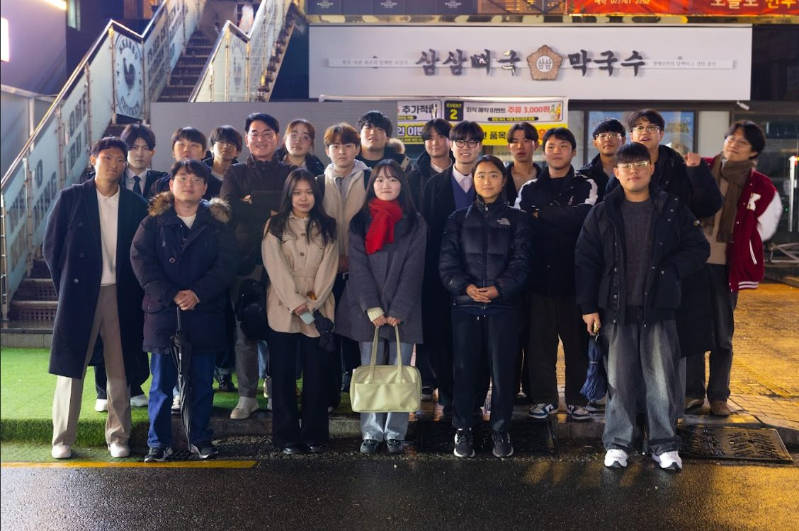
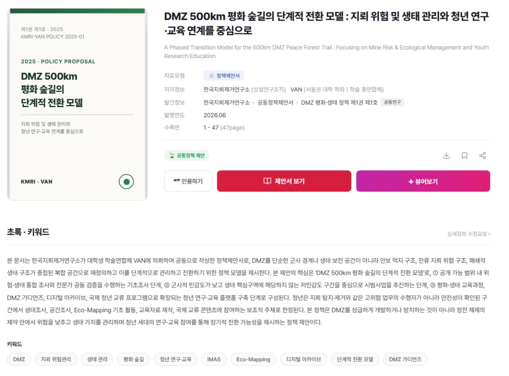
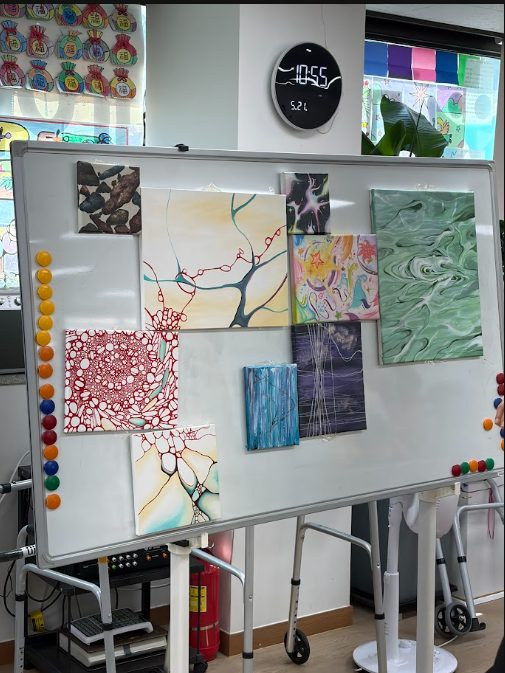
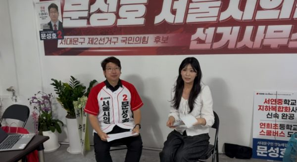
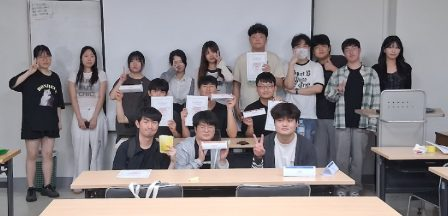

ACADEMIAOFFICIAL ACTIVITY RECORD
Co-authored Essay Anthology On the Line
A social-criticism anthology in which VAN’s standing research organisation records today’s contested issues in the language of its own generation.
View recordVAN ARCHIVE
Official records of VAN projects beyond the three representative activities shown on HOME.
13 records
ACADEMIAOFFICIAL ACTIVITY RECORD
A social-criticism anthology in which VAN’s standing research organisation records today’s contested issues in the language of its own generation.
View recordACADEMIAOFFICIAL ACTIVITY RECORD
A regular in-semester programme where members choose research topics, write papers and defend them in discussion.
View recordTECHOFFICIAL ACTIVITY RECORD
A technical team that automates repetitive work with AI and builds in-house AI services on VAN’s accumulated data.
View recordFINANCEOFFICIAL ACTIVITY RECORD
An independent research project covering small and mid-cap listed companies overlooked by brokerage analysts.
View recordEDUCATIONOFFICIAL ACTIVITY RECORD
A platform development project addressing educational gaps and access to learning in Africa.
View recordMEDIAOFFICIAL ACTIVITY RECORD
An independent youth news outlet currently completing incorporation and press registration.
View recordNETWORKOFFICIAL ACTIVITY RECORD
Work with student leaders at major world universities toward a global federation of universities.
View record
FORUMOFFICIAL ACTIVITY RECORD
A town-hall-style youth policy conversation held near the National Assembly in Yeouido.
View record
POLICYOFFICIAL ACTIVITY RECORD
A joint proposal for the phased transition of a 500-kilometer DMZ peace-forest trail.
View record
POLICYOFFICIAL ACTIVITY RECORD
A public policy exhibition and collaborative development of local policy proposals with election candidates.
View record
MEDIAOFFICIAL ACTIVITY RECORD
Media and candidate interviews examining youth politics and local policy agendas.
View record
NETWORKOFFICIAL ACTIVITY RECORD
Joint academic programs and cross-organization discussions that expanded VAN’s collaboration experience.
View recordFORUMOFFICIAL ACTIVITY RECORD
A policy conversation with former lawmaker Yoo In-taek on the structural limits of Korea’s two-party system.
View recordNo activity records match your search.